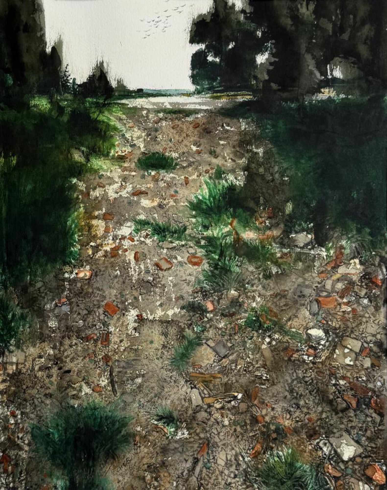

Liuli Road
琉璃路

- Artwork ID / 作品编号
- KW-W-000004
- Year / 年份
- 2023
- Medium / 媒介
- Watercolor on paper / 纸本水彩
- Dimensions / 尺寸
- 54 × 38 cm (H × W / 高 × 宽)
A village path is scattered with broken bricks, stones, and fragments of discarded glass. Under the sunlight, the tiny pieces of glass embedded in the earth sparkle like scattered gems across the ground. Wild grasses emerge between the cracks, quietly sharing the landscape with the traces left by time. My work focuses on the marks created by both people and nature. What appears abandoned is not merely debris; through changing light, seasons, and new growth, these ordinary remnants reveal unexpected beauty. Even the most familiar ground holds moments waiting to be discovered.
一条乡村小路散落着砖瓦、碎石和废弃的玻璃。阳光照射下，埋在泥土中的玻璃碎片闪烁着细碎的光芒，仿佛散落在大地上的颗颗琉璃。野草从缝隙间生长，与时间留下的痕迹共同构成了一片宁静而真实的风景。 我关注的是人与自然共同留下的印记。生活中的遗存并不只是废弃之物，它们随着光线、季节和植物的变化，不断呈现新的面貌。即使是最普通的土地，也蕴藏着值得发现的光彩。